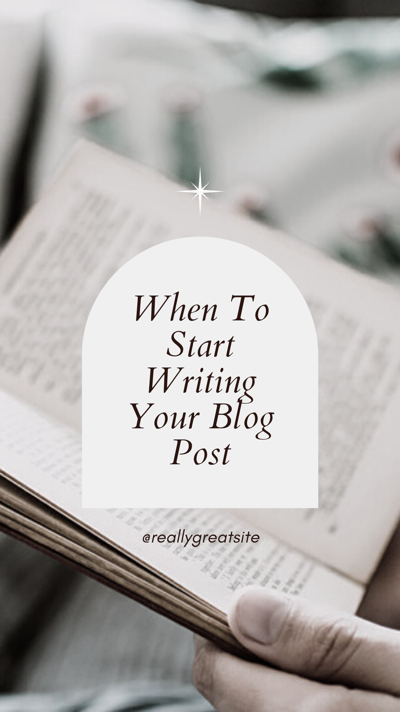

You can now make blogging as your business by publishing unique contents online. Blogging is basically an online publication related to a particular topic that you wanted to talk about where people can comment regarding their thoughts and opinions. There are several kinds of bloggers that you can classify yourself to. There are what they call ghost bloggers, affiliate marketer, influencer, blogger with advertisers, email marketer, eBook Author, Infopreneur, online course creator, product reviewer, sponsored post writer, business blogger, social media blogger, event blogger, fashion blogger, travel blogger, DIY blogger, recipe blogger and a lot more to discuss further more at the later part of this page. Choosing blogging as your choice of career may seem unrealistic and not ideal but with enough dedication, right mindset and effort, you can become a well-known and successful blogger.
First of all you decide what kind of blogger you want to be. As you have read earlier, there are different types of bloggers in this industry and these are the:
this kind of blogger gets paid by offering their service as a freelance blogger to other businesses and publications that will pay for every content that they create.
these are the bloggers who write content for other bloggers that publish their work as their own.
this is a great way for bloggers to earn income. Here you can create content with affiliate links to promote products or services from other brands and earn a percentage from every sale that you gain through it.
this type of bloggers work with partner brands to promote their products or services as an influencer
here you can get paid by reviewing various products from different brands on your blog
if you have enough knowledge about business topics, then this one's for you. Here you can create your content about business as a way of building up your influence and expertise to offer business consulting, coaching or other business related services.
you can create a blog about social media and use it for marketing social media management or consulting services
The list goes on but the bottom line of this is choose the topic you are interested and knowledgeable about to share with other people. So basically, the first step is to pick a topic then the second is to select your platform. In selecting a platform that is suitable for you, it is important to consider its convenience and its accessibility to your audience. Some examples you can choose from are WordPress, Weebly and Squarespace. Although, WordPress is the most recommended among all of them as it said that this platform is great for blogging because its primary focus is managing content. After this, you need to choose a web hosting provider to give all of the files that make up your blog exist on the internet. Web host providers ensure that your website will be able to grow while maintaining good speed. Next thing to do is to choose your blog’s domain name. Your domain name basically serves as your blog’s address that gives your readers an idea of what your blog is all about.
Now that you know where to compose your blog, start figuring out the template that you would like to use for it. Just remember that your template should not just look good but it also has to complement and highlight your content. Then finally, you can now plan and write your posts.
Your content calendar will help you to organize and keep track of your blog posts. It will help you structure your blog rather than just having a to-do-list. You can create your calendar through MS Excel Sheets, Google Sheets, or use a templated calendar where you can include the Article title, brief description, relevant keywords, draft due date and post publish date.
Posting consistently is great, but it is not enough to encourage your audience. What you need is to post with relevance and go with what is trending and in demand.
Keyword research is mostly used to identify the popular terms that people type into search engines, and if you are wondering how would this thing be useful for you, it helps you to have an idea of what content people are looking for and the questions they wanted to know where you create a content to give them an answer, which also makes your content relevant to the readers.
There are a lot of ways to promote your blog but the quickest way for you to get more viewers is by the use of social media. Aside from this, you can also use relevant hashtags, following accounts that have a similar content as you or you can also write a guest post. Guest posts means gaining exposure across the blogging community by writing an article for someone else’s blog to gain an exposure and a wider audience of interested readers.
Just like what I have mentioned above, search engines will help you find specific keywords that are relevant to your target audience. On the other side of it, this will also help you to get a higher chance of appearing first when people search for keywords that are related to your blog.
This is optional, but this is where you can earn money from your blogs. Affiliate marketing means getting a commission from different marketers and partnerships by promoting their products or services on your blog. You can do this by creating content about their brand and placing a link where your readers can avail it.
2021 * 5-minute read
One of the most effective ways to build brand awareness to your target audience is through consistent blogging.
Read More2021 * 15-minute read
Is business blogging still worth it? The answer is yes. Absolutely. Read on to find out how to do business blogging the right way so that you can reap the rewards in 2021 and beyond.
Read More
2021 * 10-minute read
So, you want to start a blog huh? Great idea! But…how do you get started? There’s so much info out there on the web, and everyone’s telling you to do different things. Who do you listen to?
Read MoreVideo Courtesy: WPMU DEV
https://www.youtube.com/watch?v=NjwUHXoi8lM
We create this content for general information purposes and all the information is base on our understanding and researches and it should not taken as advice. Always take professional advice.
Disclaimer: Note that we do not own the images and videos used in this website. All rights and credit goes directly to its rightful owners. This website is non-profit and made for educational purposes only. No copyright infringement intended.
"Copyright Disclaimer, Under Section 107 of the Copyright Act 1976, allowance is made for "fair use" for purposes such as criticism, comment, news reporting, teaching, scholarship, and research. Fair use is a use permitted by copyright statute that might
otherwise be infringing. Non-profit, educational or personal use tips the balance in favor of fair use"